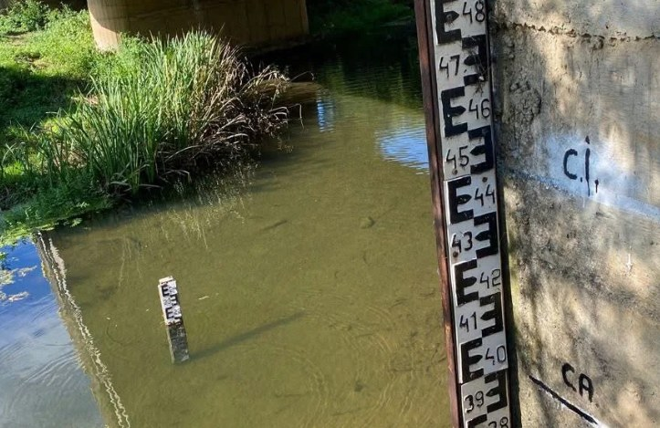

Județul Mehedinți se află sub avertizare hidrologică de Cod galben și Cod portocaliu de inundații, în contextul precipitațiilor prognozate și al creșterii debitelor pe mai multe cursuri de apă. Avertizările au fost transmise de Administrația Bazinală de Apă (ABA) Jiu și vizează mai multe bazine hidrografice din Oltenia.
Cod portocaliu: râul Motru, Jiu și Gilort
Cel mai ridicat nivel de avertizare, Codul portocaliu, este valabil în intervalul 1 noiembrie, ora 18:00 – 2 noiembrie, ora 12:00. Avertizarea vizează râul Motru – în bazinul superior și pe afluenții din bazinele mijlociu și inferior –, dar și anumite sectoare ale râurilor Jiu și Gilort. Pentru acest nivel de avertizare sunt vizate județele Mehedinți și Gorj.
Cod galben: Cerna, afluenții Dunării, Desnățui și Jiu
Codul galben este valabil în intervalul 1 noiembrie, ora 12:00 – 2 noiembrie, ora 18:00. Sunt vizate:
- râurile din bazinul Cernei;
- afluenții mici ai Dunării de pe sectorul dintre Berzeasca și Desnățui – zonă care include și cursurile de apă din sudul și vestul Mehedințiului;
- anumite sectoare din bazinele Desnățui și Jiu.
⚠️ Pe scurt – avertizările hidrologice ABA Jiu
🟠 COD PORTOCALIU: 1 noiembrie, ora 18:00 – 2 noiembrie, ora 12:00
Râul Motru (bazin superior și afluenți din bazinele mijlociu și inferior), sectoare ale râurilor Jiu și Gilort – județele Mehedinți și Gorj
🟡 COD GALBEN: 1 noiembrie, ora 12:00 – 2 noiembrie, ora 18:00
Bazinul Cernei, afluenții mici ai Dunării între Berzeasca și Desnățui, sectoare din bazinele Desnățui și Jiu
Emitent: Administrația Bazinală de Apă Jiu

Ce recomandă Apele Române Jiu
Reprezentanții Apelor Române Jiu le recomandă cetățenilor să evite traversarea râurilor prin vaduri sau prin zone inundate și să nu se apropie de maluri, unde nivelul apei poate crește rapid. De asemenea, oamenii sunt sfătuiți să evite activitățile în apropierea albiilor și pe terenurile expuse riscului de inundare.
Pe lângă aceste recomandări, câteva reguli utile pentru locuitorii din zonele aflate lângă râuri:
- nu traversați cu mașina drumuri sau poduri acoperite de apă – adâncimea și forța curentului sunt greu de apreciat;
- mutați animalele, utilajele și bunurile de valoare din curțile aflate aproape de albii;
- curățați șanțurile și podețele din dreptul gospodăriei, pentru ca apa să se poată scurge;
- urmăriți mesajele RO-ALERT și informările autorităților locale;
- în caz de pericol, sunați la 112.
Ce înseamnă codurile hidrologice
Codul galben indică posibile scurgeri importante pe versanți, torenți și pâraie, cu viituri rapide pe râurile mici și creșteri de debite, cu posibile depășiri ale cotelor de atenție. Codul portocaliu semnalează un risc mai mare, cu posibile depășiri ale cotelor de inundație și inundații locale, motiv pentru care populația din zonele vizate trebuie să fie atentă la evoluția nivelului apei.
Pentru alte avertizări meteo și hidrologice, urmăriți secțiunea Actualitate de pe MehedintiAzi.ro și pagina de Facebook Mehedinți Azi.
Redactia MehedintiAzi.ro, pe baza informațiilor transmise de ABA Jiu